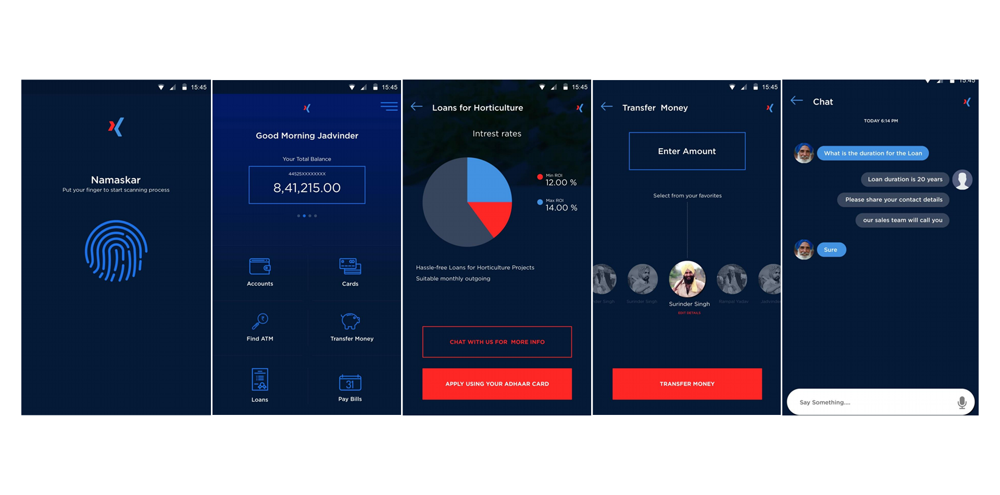
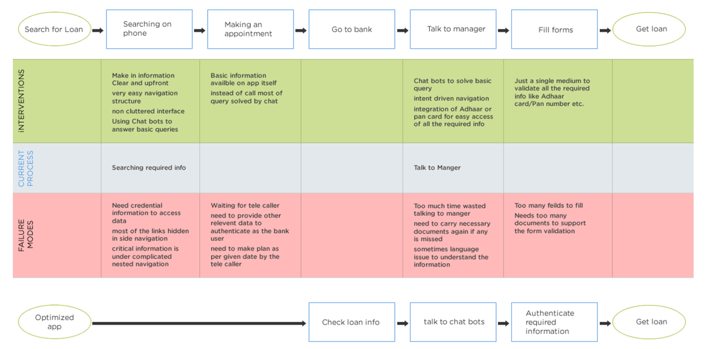

Rural Banking Mobile App: Financial Inclusion for Farmers
A mobile banking app concept designed specifically for rural farmers in India, focusing on accessibility, trust-building, and reducing operational costs through intuitive self-service features and chatbot assistance.

Strategic Context
Lead UX Designer & Strategist
Financial Services / Rural Banking
Concept Development & Pitch (2022)
Pitching mobile banking to traditional rural bank stakeholders
The Core Problem
Rural farmers in India faced significant challenges accessing banking services due to geographic isolation, language barriers, and complex bureaucratic processes. Traditional banking required extensive travel, paperwork, and time away from farms resources that rural communities couldn't afford to lose.
Rural Banking Pain Points Identified
- • Geographic isolation: Banks located far from rural areas, requiring full-day travel
- • Language barriers: Complex financial terminology not accessible to rural users
- • Time constraints: Farmers couldn't spare entire days for banking tasks
- • Documentation complexity: Multiple documents required for simple services
- • Technology gap: Limited digital literacy among rural populations
The bank's business objectives were equally critical: reduce costs spent on customer care centers, promote relevant agricultural products/services, and push self-service adoption to improve operational efficiency.
Strategic Goals
Farmers First
Design for rural users with limited digital literacy and specific agricultural needs
Reduce Operational Costs
Decrease call center volume and branch visits through self-service features
Intelligent Assistance
Implement chatbots for basic queries while maintaining human support options
Understanding Rural Users
Amrit Singh
"Today's world you get everything on mobile"
- • Owns large land, employs workers
- • Wants all info on phone
- • Avoids travel for small tasks
Sunil Kumar
"One day I will have more production in my small field"
- • Grows for family needs
- • Needs quick loans
- • Wants tractor for productivity
Bankelal
"The weather is unpredictable, rains are not as good now"
- • Grows cash crops for market
- • Needs market updates
- • Seeks easy crop selling platform
These personas revealed distinct but overlapping needs: Amrit represented tech-adopters who could champion the app, Sunil represented the core user needing simplicity, and Bankelal represented commercial users who needed advanced features. The design had to serve all three while remaining accessible to first-time smartphone users.
Current Painful Process
- 1. Search for loan information
- 2. Call bank or visit branch
- 3. Wait for appointment
- 4. Travel to bank (full day)
- 5. Talk to manager with documents
- 6. Fill complex forms
- 7. Wait for approval (days/weeks)
Optimized Mobile Process
- 1. Check loan info in app
- 2. Chat with bot for questions
- 3. Authenticate with Aadhaar card
- 4. Apply instantly
- 5. Receive SMS confirmation
Service Blueprint Analysis
Through service blueprinting, we identified critical failure points in the traditional banking process: hidden information in complex navigation, authentication barriers, language issues, and excessive time requirements. The solution focused on making information upfront, simplifying authentication through Aadhaar integration, and providing multilingual support.

Key Design Decisions
Problem
Rural users had limited digital literacy and distrusted mobile banking due to security concerns and complex interfaces. Traditional banking apps assumed tech-savvy urban users.
Solution
Implemented dark theme for perceived security, fingerprint authentication for familiarity, and simple language with agricultural terminology. Used large touch targets and minimal navigation to reduce cognitive load.
Problem
Loan applications required multiple branch visits, extensive documentation, and long waiting periods impossible for farmers who couldn't leave their farms for entire days.
Solution
Created Aadhaar-based instant loan applications with chatbot pre-qualification. Implemented agricultural-specific loan categories (tractor loans, horticulture loans) with clear interest rates and one-tap applications using biometric authentication.
Problem
Bank call centers were overwhelmed with basic queries about ATM locations, loan information, and procedural questions costing significant operational expenses.
Solution
Implemented intelligent chatbot ("C'kud bots") for basic queries with seamless escalation to human agents. Integrated geolocation-based ATM/branch finder with real-time updates. Made critical information upfront in the interface to prevent unnecessary queries.
Design Principles for Rural Users
The interface followed five core principles: 1) Easy content discovery with critical information upfront, 2) Trust-building through security cues and simple language, 3) Non-cluttered interface with agricultural imagery, 4) Simple navigation with minimum taps, and 5) User-centric decisions with customization options.
Specific features included a multilingual interface (starting with Hindi and regional languages), agricultural loan categories with relevant imagery, location-aware ATM finder that prioritized nearby options while traveling, and proactive notifications for payment reminders and relevant offers.
Projected Impact & Outcomes
Reduction in call center queries
Reduction in branch visits
Days for loan approval
ATM/Branches located instantly
📈 Strategic Value & Lessons
Financial inclusion through design: This project demonstrated how thoughtful UX design could bridge the digital divide for rural populations. By addressing specific agricultural needs and literacy levels, we created a banking solution that was both accessible and empowering.
Business-User alignment: The solution successfully aligned user needs (simplicity, accessibility) with business objectives (cost reduction, product promotion). Self-service features reduced operational costs while improving customer satisfaction a rare win-win in traditional banking.
Context-aware design: Rural users have unique constraints (limited connectivity, agricultural schedules, language preferences) that urban-focused designs ignore. This project highlighted the importance of field research and persona development for context-specific solutions.
Pitching innovation to tradition: Presenting a mobile-first solution to traditional banking stakeholders required framing technology as an enabler rather than a replacement. Success came from demonstrating clear ROI through reduced operational costs and improved customer retention.